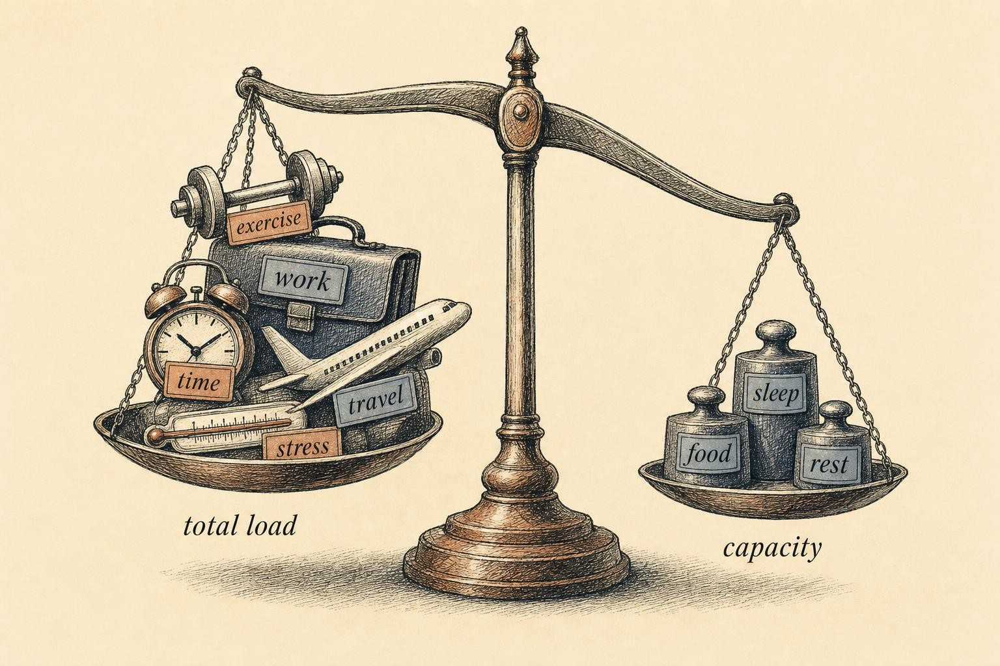
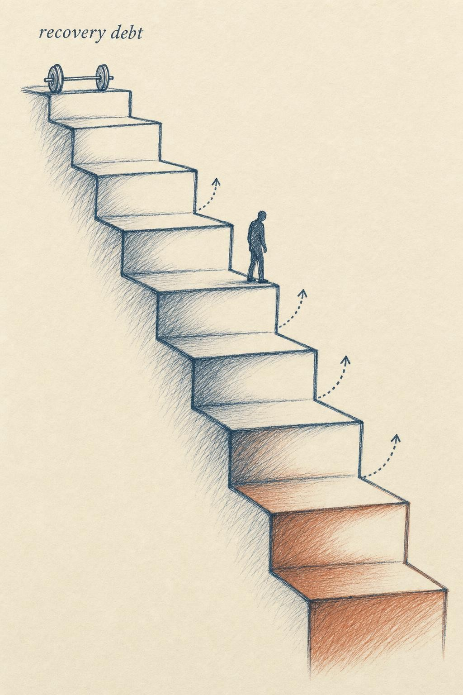

Your Body Doesn't Know It's Monday
Why non-training stress spends the same recovery budget as training, and how the deficit compounds.
Renata Souza is thirty-six years old and has worked in the same hospital emergency department for nine years. For most of that time she trained on a fixed daytime schedule, and her strength program moved forward the way well-designed strength programs are supposed to: slowly, steadily, with occasional stalls that a deload week reliably fixed. Eighteen months ago her department switched her onto a rotating roster, flipping her between day shifts and night shifts every few weeks. Eight months ago her mother was diagnosed with a condition that requires frequent appointments, and Renata now manages most of them on her days off. She kept running the exact hypertrophy block that had worked for her before any of this started, on the reasonable assumption that if the sets, loads, and progression written on the page were unchanged, her results should be unchanged too. Instead, across one full eight week block, she added no weight to a single major lift, felt persistently run down between sessions, and caught a head cold that lingered for three weeks instead of the usual five days.
The difference was not the program. Nothing about her training changed between the block that worked and the block that did not. What changed was everything surrounding it: a schedule that no longer let her sleep on a consistent clock, and a caregiving load that turned every day off into an extension of her work week rather than a rest from it. Renata's body kept a ledger of all of it, and it never checked whether a given demand originated in the squat rack, the nurses' station, or her mother's kitchen table. To her physiology, a night shift and a heavy set of squats were entries in the same account, and by the second block, that account was overdrawn.
This chapter names what Renata's body already knew before either of us had a term for it. Everything in this course has been converging on a single systems insight, and this is the chapter where it finally lands in full. In Class 5 we treated recovery as a finite budget that training draws down and rest replenishes. That model was correct as far as it went, but it was quietly incomplete, because it let you assume that training is the only thing spending the budget. It is not. The demand side of your recovery ledger includes your job, your relationships, your caregiving duties, an exam schedule, an unresolved illness, a red-eye flight, and the low-grade hum of financial worry. All of it draws on the same finite adaptive capacity that your training adaptations depend on, and none of it waits politely for a training cycle to finish before it cashes in its share.
Renata's story will return at several points in this chapter, not because her situation is unusual, but because it is ordinary. Rotating shifts, a stressful stretch at work, a family member who needs help: these are not exotic events that occasionally interrupt training. For most adults training seriously across a working lifetime, they are the baseline condition that training has to survive. By the end of this chapter you will have a framework for treating that reality as data your program should respond to, rather than as an excuse your program should ignore.
One budget, many bills
Start with the mechanism, because without it the total load idea is just a metaphor, and metaphors are easy to argue with. The clearest framework comes from Bruce McEwen's foundational work on allostasis, stability achieved through change, and allostatic load, the cumulative physiological cost of mounting repeated adaptive responses over time (McEwen, 1998). According to McEwen (1998), the body does not defend a single fixed internal set point the way a thermostat holds a room at a constant temperature. Instead it continuously adjusts internal parameters, blood pressure, heart rate, cortisol output, immune tone, to anticipate and meet demand as it arrives. That continuous adjustment is allostasis, and it is a feature of a healthy system, not a flaw. The trouble begins when the adjustments are required too often, or fail to shut off cleanly once the demand has passed, and the wear from repeated mobilization accumulates as allostatic load.
McEwen's crucial move, the one this whole chapter depends on, was to show that the same regulatory machinery gets recruited regardless of what the stressor actually is. The hypothalamic-pituitary-adrenal (HPA) axis, the sympathetic nervous system, and the immune and cardiovascular systems all participate whether the demand is physical, psychological, or environmental. A heavy set of back squats, a hostile message from a supervisor, and a sleepless night in an unfamiliar bed all converge on overlapping mediators. Cortisol does not arrive with a note attached explaining whether it was released because you deadlifted or because a difficult phone call is still an hour away. The molecule is identical either way, and the receptor reading it does not check the source before it responds.
It is worth pausing on why the body is built this way, because the design makes sense once you see it from the outside. A nervous system that maintained separate response channels for gym stress, work stress, and relationship stress would need to evolve an entirely new detection and mobilization pathway every time a new category of demand appeared in an organism's environment, and it would need some higher authority to decide which channel a given moment's threat belonged to before any resource could be allocated. That is an absurd amount of redundant architecture to build and maintain, and evolution does not tend to build absurd redundant architecture when a simpler solution already works. The simpler solution is a single, general purpose appraisal system, centered on structures like the hypothalamus and the amygdala, that asks one question of every incoming signal: does this require a resource shift right now, and if so, how large a shift. The system that answers that question does not care whether the input arrived through your eyes, your inner ear, your gut, or your own rehearsed anxious thoughts. It cares about magnitude and duration. This is precisely why training and life stress cannot be kept in separate accounts inside your physiology. There is only one accounting system, because building two would have cost more than it was ever worth.
A 2025 review by Feigel and colleagues, extending the allostatic load model into military training research, makes the applied stakes of this design explicit. According to Feigel et al. (2025), the physical, cognitive, and emotional demands that service members accumulate during training are not separable line items that can be evaluated one at a time. Chronic stress duration, not the size of any single stressor, disrupts the adaptive mechanisms that hold allostasis in place, and the resulting allostatic load is linked to degraded physical performance, elevated musculoskeletal injury risk, and impaired psychological wellbeing across the training population they reviewed. Notice that the performance decline in that review is a downstream consequence of accumulated total load across domains, not a training specific failure with a training specific cause. The training did not have to be the source of the problem in order to become its victim, and the same logic applies whether the population in question is a service member mid training cycle or a nurse mid hypertrophy block.

The body weighs every stressor on one scale, whatever its source." data-image-idx="0" style="display:block;max-width:100%;max-height:75vh;height:auto;width:auto;margin:0 auto;cursor:pointer;">This is the picture Figure 1 is trying to earn. One scale, many weights, no separate compartment reserved for the weights that happen to have originated outside a gym. A briefcase and a barbell sit on the same pan because, to the system doing the weighing, they are the same kind of object.
Why one nervous system, not several
It helps to name the specific mediators doing this double duty, because abstract talk of a shared budget can start to sound like a motivational slogan rather than a description of tissue. Catecholamines, adrenaline and noradrenaline, are released by the sympathetic nervous system within seconds of any sufficiently large demand, whether that demand is a heavy set of squats, a near miss in traffic, or a tense confrontation with a colleague. Cortisol follows on a slower timescale from the HPA axis and, as earlier chapters established, mobilizes glucose and modulates inflammation regardless of what triggered its release. Pro-inflammatory cytokines rise after intense training sessions as part of the local repair process, and they also rise during infection, during poor sleep, and during sustained psychological stress, because the immune system uses largely the same signaling molecules to respond to torn muscle fibers as it uses to respond to a pathogen or a threatening thought. None of these systems maintains a separate inventory for gym-related demand. They respond to magnitude and duration, full stop, and they hand the bill to the same downstream tissues no matter which door the demand walked in through.
Seen this way, the old idea of homeostasis, a single fixed internal state the body defends, undersells what is actually happening. Allostasis describes a body that predicts demand and shifts its operating parameters ahead of time, which is a more accurate and more useful model for a trainee than the thermostat metaphor most people carry around. A thermostat only reacts once the room has already drifted off target. An allostatic system tries to get ahead of the drift, which is precisely why chronic anticipatory stress, worrying about a deadline that has not arrived yet, or bracing for a shift that starts at midnight, produces real physiological cost even before the event itself occurs. Your body started paying for Monday's problems on Sunday night, and it will keep charging that account regardless of whether Monday's problem turns out to be a five-rep max or a five-hour meeting.
The overtraining literature has always known this
If you read the training-science literature carefully, the whole-organism view is not a fringe position that this course is inventing for convenience. It is written into the field's own working definitions. The joint consensus statement from the European College of Sport Science (ECSS) and the American College of Sports Medicine (ACSM) on overtraining syndrome establishes a taxonomy you have met before in this course: functional overreaching, a short-term performance dip followed by supercompensation, non-functional overreaching, a stall that can cost weeks to reverse, and full overtraining syndrome (OTS), a state of prolonged maladaptation across biological, neurochemical, and hormonal regulation (Meeusen et al., 2013). According to Meeusen et al. (2013), the qualifier attached to the trigger for OTS is the part most training plans quietly skip past. OTS is precipitated not only by excessive training load but by additional non-training stressors. The consensus statement is explicit that the failure mode is a combination, excessive load stacked on top of inadequate recovery, and that the recovery side of that equation includes the whole of a person's life, not merely the hours between training sessions.
Cadegiani and Kater's systematic review of the hormonal findings in overreaching and OTS, built on a PRISMA protocol, reaches the same conclusion from the endocrine direction. According to Cadegiani and Kater (2017), OTS emerges from an imbalance between training stress and recovery capacity that is worsened by inadequate nutrition, illness, psychosocial stressors, and sleep disorders. Their review also delivers a warning worth carrying into every later chapter of this course: basal hormone levels, a single resting cortisol draw, a single testosterone reading, are poor predictors of who is sliding toward trouble. The informative signals in their review showed up in dynamic stimulation tests, where athletes with OTS displayed blunted growth hormone and adrenocorticotropic hormone (ACTH) responses consistent with suppression along the HPA axis. In other words, the hormonal picture in overreaching is a downstream consequence of accumulated total load, not a clean upstream dial you could read on any given Tuesday morning. That is part of why this course saves lab-style monitoring for its final chapter rather than opening with it.
Evidence from people who live your life
The most persuasive data for our purposes does not come from full-time professional athletes whose only job is to train. It comes from student-athletes, people managing training alongside coursework, part-time jobs, and the ordinary chaos of early adult life, which is a population that looks a great deal more like most readers of this course than a national team roster does. Hamlin and colleagues followed 182 elite university student-athletes for four years, tracking training load alongside academic stress, mood, sleep quality, and illness or injury (Hamlin et al., 2019). According to Hamlin et al. (2019), the findings map cleanly onto the mechanism described above. As examination periods approached, energy levels and sleep parameters both deteriorated together. Decreased mood, reduced sleep duration, and elevated academic stress each independently predicted injury risk, meaning each factor still predicted injury after the researchers statistically accounted for how much these athletes trained. And exam periods coincided with the highest illness rates recorded anywhere in the study, independent of training load at the time. The training did not spike during exam weeks. Life did. The bodies of these athletes responded as though the training had spiked anyway, because as far as their physiology was concerned, it effectively had.
That word independently is worth sitting with, because it comes close to compressing the whole chapter into a single adverb. Academic stress predicted injury even after the researchers statistically controlled for training volume, which means the effect was not simply a proxy for athletes training harder during stressful periods. Their finite adaptive capacity was being spent on coursework, and there was measurably less of it left over to turn a training stimulus into a training adaptation, or even to keep connective tissue robust enough to tolerate loads these same athletes had handled comfortably during calmer weeks earlier in the same season. Renata's hospital does not hand out an exam calendar, but a rotating shift roster produces a structurally similar signature: predictable stretches in which sleep, mood, and injury risk all move together for reasons that have nothing to do with how her squat program was written on paper.
Notice, too, what this rules out as an explanation. It would be convenient if the injuries and illness clustering around exam periods were simply a matter of athletes skipping warm-ups or cutting corners on technique because they were rushed. Hamlin and colleagues controlled for training load specifically to test that alternative, and the academic-stress effect held up on its own. The mechanism runs through the body's shared capacity, not through sloppier form under time pressure. That distinction matters, because it tells you the fix is not a technique cue. It is a load adjustment, the same kind of adjustment you would make for any other source of accumulated fatigue.
The reason this generalizes so cleanly beyond student-athletes is that exams are simply the psychosocial stressor this particular research population happened to have on a predictable calendar. A rotating shift roster produces a comparable signature for a nurse. A quarterly close produces one for an accountant. A newborn's first months produce one for a new parent, whether or not that parent has ever set foot on a competitive roster. None of these groups appears in Hamlin and colleagues' dataset, but none of them needs to, because the mechanism the study isolated, finite adaptive capacity being spent on a psychosocial demand that has nothing to do with a barbell, does not care what the demand's return address happens to be. What makes student-athletes useful as a research population is not that their stress is special. It is that their stress arrives on a fixed academic calendar a researcher can measure against, which makes the underlying mechanism easy to see clearly. The mechanism itself is universal.
Recovery debt: the sleep debt, generalized
In Class 2 we introduced sleep debt, the way lost sleep does not simply vanish at dawn but accumulates as a running deficit that degrades performance, mood, and the perception of effort until it is repaid. Recovery debt is that same idea generalized to the whole organism. It is the slowly widening gap between total load and total capacity, and like sleep debt, it does not announce itself with a single dramatic event. It compounds quietly, one under-recovered day at a time, until the sum is large enough to convert good training into no progress, or into outright regression.
The mechanism connecting sleep debt to recovery debt is not merely an analogy borrowed for convenience. It is, in a meaningful sense, the identical physiology wearing two different names. Balbo and colleagues' review of sleep and activity along the HPA axis documents a two-way relationship: sleep deprivation and reduced sleep quality produce what the authors describe as functionally important HPA activation, partial sleep restriction elevates evening cortisol, and abrupt shifts in the timing of the sleep period disrupt the daily cortisol rhythm (Balbo et al., 2010). According to Balbo et al. (2010), that last finding describes Renata's rotating schedule almost exactly. Every time her hospital flips her from day shifts to night shifts, she is not simply losing hours of sleep, she is asking her cortisol rhythm to reset onto a new clock with almost no notice, which is precisely the kind of abrupt shift their review associates with a disrupted rhythm. HPA hyperactivity, in turn, is tied to metabolic and cognitive dysfunction in their review. Lost or misaligned sleep, then, is not a separate problem sitting politely beside training stress. It feeds directly into the same allostatic load account McEwen described, raising the baseline cost of everything else a body is being asked to absorb, including a hypertrophy block that would otherwise be well within her capacity.
There is a further reason sleep sits so close to the center of this account rather than functioning as merely one input among many. Sleep is when a large share of the tissue-level work of adaptation actually happens: protein synthesis rates favor repair during deep sleep stages, growth hormone pulses concentrate in the early sleep period, and immune surveillance, the ongoing patrol that clears minor tissue damage and holds latent infections in check, is substantially more active during sleep than during waking hours. A trainee running a hypertrophy block is, in a very literal sense, asking their sleeping hours to do a large share of the actual construction work the daytime training session merely ordered. Shorten or fragment those hours, or shift them unpredictably the way a rotating roster does, and you are not simply feeling more tired the next day. You are cutting into the window where the training stimulus was supposed to become a training adaptation. This is part of why Renata's persistent three-week cold was not a coincidence sitting beside her stalled lifts. Both were downstream of the same disrupted sleep window doing less of its job.
Recovery debt has a nasty property that ordinary tiredness lacks. It is self-reinforcing. Sustained debt lowers the very capacity that would repay it. Under-recovered sleep degrades the following day's recovery quality. Elevated evening cortisol impairs the sleep architecture that would otherwise correct it. Suppressed appetite or disrupted digestion undercuts the nutritional side of recovery from Class 3. A fatigued, low-mood trainee performs technique less carefully and enjoys the session less, which erodes both adherence and the willingness to protect downtime once it is available. Kellmann frames this precisely as a recovery-stress balance, arguing that under-recovery, not merely excess training, is the pathway into overtraining, and that recovery has to be actively managed rather than assumed to happen on its own between sessions (Kellmann, 2010). The debt does not sit still and wait politely for a scheduled deload week. Left unaddressed, it deepens the hole it already dug, which is exactly what happened across Renata's second hypertrophy block: a schedule change and a family health crisis did not simply subtract a fixed amount from her recovery, they lowered her capacity to recover from anything at all, training included.

Debt compounds: sustained deficit lowers the capacity that would repay it." data-image-idx="1" style="display:block;max-width:100%;max-height:75vh;height:auto;width:auto;margin:0 auto;cursor:pointer;">Life stress is a programming variable
Here is the practical reframing the whole course has been building toward. If total load governs adaptation, and life stress is a component of total load on equal footing with training, then life stress is a legitimate programming variable. A hard life stretch is a reason to reduce training load, in exactly the way a hard training block is a reason to deload. The deload logic from Class 7 does not only apply to fatigue manufactured in the gym. It applies to the total. The trigger for backing off is never simply I trained too much, it is my capacity is overspent, and a rotating shift schedule, a sick parent, a newborn, a bereavement, or a punishing stretch at work all count toward that overspend just as surely as an extra training day would.
This sounds obvious stated plainly, yet it runs against a deep cultural habit, the belief that training is where a person demonstrates toughness by refusing to yield to circumstances, that the program is sacred and life is simply the thing to be powered through around it. The evidence points the other way. Kellmann's work with the Recovery-Stress Questionnaire for Sport (RESTQ-Sport) validated an instrument that deliberately captures both training-specific and general life stressors, including non-sport stress, social stress, and emotional exhaustion, alongside several distinct dimensions of recovery (Kellmann, 2010). According to Kellmann (2010), studies using this instrument show that raising training volume reliably raises stress scores and lowers recovery scores, and that raising life stress does the same thing through an entirely separate channel. The two are interchangeable inputs to one balance. A validated monitoring tool would not bother measuring social and emotional stress at all unless those measurements moved the outcome that actually matters.
So what does treating life stress as a programming variable look like in practice? It looks like autoregulation extended past the gym door. When a brutal week arrives, the discipline is not to white-knuckle the prescribed session exactly as written. It is to cut volume, drop intensity toward technical or lighter work, trade a fifth session for sleep, and treat the reduced week as correct programming rather than as a failure of willpower. Halson's review of load monitoring supports this directly, showing that combined subjective and objective markers, rating of perceived exertion (RPE), heart rate variability (HRV), and simple wellness questionnaires, can detect whether a trainee is adapting or sliding toward non-functional overreaching before real damage accumulates, and that sleep loss specifically degrades performance, motivation, and perceived effort (Halson, 2014). Halson's honest caveat, worth repeating here, is that no single marker is definitive on its own. A trainee needs a small dashboard of signals, not one number treated as an oracle. Building that dashboard is the entire subject of our final chapter.
Grading the modalities honestly
Because life stress and training stress share one budget, the highest-leverage recovery modality for most people is rarely the fashionable one. Cold plunges, massage devices, and compression garments occupy the low end of the effect ledger. Adequate sleep, sufficient energy availability, and a reduced total load occupy the high end, precisely because those are the inputs the primary literature keeps naming as the actual drivers of the recovery-stress balance (Kellmann, 2010; Cadegiani & Kater, 2017; Balbo et al., 2010). This is not a dismissal of the smaller tools. It is a matter of proportion. If a person is carrying a large recovery debt built from sleep loss and psychosocial strain, the marginal return on a percussion massager is a rounding error against the return of two extra hours of sleep and one fewer hard training day that week. Spend attention where the biology says the money actually is.
Think of it as an opportunity cost problem rather than a purity test. Every dollar and every minute spent on a low-yield modality is a dollar and a minute not spent on a high-yield one, and most people have a finite budget of both. A trainee who buys a compression sleeve is not doing anything wrong, but if that same trainee is also skipping an extra hour of sleep to scroll a phone, the sleeve is not the leverage point in that picture. The question worth asking of any recovery tool is not does this help at all, because almost everything helps a little. The question is where does this rank against the inputs the literature keeps naming as the actual drivers, and is there a cheaper, larger lever sitting unused nearby.
Case study: Renata and the schedule that changed the math
Run Renata's situation through this chapter and the confusion resolves into a coherent picture, not a diagnosis, which is not this course's to give, but an accurate account of where her capacity went. Her training stimulus did not change. Her total load did, dramatically. A rotating shift schedule is, according to Balbo et al. (2010), precisely the kind of abrupt disruption to the sleep period that destabilizes the cortisol rhythm, and a destabilized rhythm raises the baseline cost of everything else her body has to do, training included. Layer her mother's care on top of that, and Renata was carrying academic-stress-sized psychosocial load, in Hamlin and colleagues' terms, on top of a physiological disruption her old program's earlier success had never had to survive (Hamlin et al., 2019).
None of this means Renata's training was flawed. It means her total load exceeded her capacity, and the deficit was coming almost entirely from outside the gym. Treating that deficit as a training problem, adding intensity, pushing through, chasing the same numbers on the same timeline, was exactly the kind of error the overtraining consensus warns against: excessive load stacked on top of inadequate recovery, where the inadequate recovery has nothing to do with how hard she trained (Meeusen et al., 2013). The corrective move was not a smarter program. It was fewer sessions and lower volume specifically during her night-shift weeks, alongside a deliberate decision to treat her caregiving load as a real entry in the ledger rather than something to quietly work around. Once Renata began reducing training load during weeks she knew would include night shifts or her mother's appointments, and holding a more ambitious progression during her calmer weeks, her numbers started moving again, not because the program got smarter, but because it finally matched the budget she actually had.
In concrete terms, that meant Renata stopped treating her four-day split as fixed furniture. During a week anchored around two overnight shifts, she now trains twice instead of four times, keeps loads well under her recent working weights, and skips anything that leaves her more than mildly sore, because mild soreness on broken sleep behaves like moderate soreness on a full night's rest. During a week with no night shifts and no medical appointments to manage, she trains her full split and pushes the block's hardest sets, because that is a week where her capacity can actually absorb them. Her total training volume across a month looks lower on paper than the block that failed her, yet her strength is moving again, because the volume that remains lands on weeks that can actually pay for it. The lesson is not that less training works better in general. It is that training has to be sized to the capacity available that particular week, not to the capacity a fixed template assumes everyone has all the time.
It is worth naming what Renata actually walked away with, because it is the real deliverable of this section. She did not leave with a diagnosis, a supplement, or a new set of exercises. She left with a working model: her rotating schedule and her caregiving load were legitimate programming inputs, not personal failings to hide from her training log, and a stalled block was information about her total load rather than proof that she needed to try harder. That is a sturdier outcome than a new program, because it travels with her through the next schedule change, whatever it turns out to be.
Where training adjustment ends and something else begins
We need to be careful about a boundary here, because the same model that empowers a trainee to adjust their own training can, misused, lead them to keep quietly adjusting when the situation has outgrown training entirely. The overtraining literature describes a spectrum, and its far end, non-functional overreaching and true overtraining syndrome (OTS), is not a problem solved by a weekend of extra rest. According to Meeusen et al. (2013), OTS is a state of prolonged maladaptation that can take weeks to months to resolve and that shares features with clinical conditions no training log can address on its own. Persistent unexplained fatigue, mood disturbance that does not lift, chronic sleep disruption, recurrent illness, and pain are signals that warrant professional evaluation, a physician, a registered dietitian, a mental health professional, not another deload.
Hold this distinction cleanly, whether you are managing your own training or supporting someone else's. A hard week is a training load problem, and this chapter has given you real tools for it. Chronic stress, burnout, disordered eating, or persistent pain is a signal that has moved beyond the scope of training adjustment, and the competent, evidence-based response is to recognize that and refer or seek care rather than keep tinkering with sets and reps. Pain and dysfunction are signs that deserve a proper look, never a diagnosis made from a training log, and never a thing to be out-programmed. Knowing where the training lever stops working is itself a professional skill, arguably the most important one this chapter teaches.
This boundary is protective rather than limiting, and it is worth naming why. The total load model in this chapter is powerful precisely because it gives you real levers, reduce volume, protect sleep, treat a hard week as a legitimate reason to back off. That power can quietly curdle into a trap if it convinces someone that every symptom is just another load-management problem waiting for the right adjustment. A rotating shift schedule is a load-management problem. Months of unexplained fatigue that persist after load has already been reduced, mood disturbance that does not track with any identifiable stressor, or pain that does not respond to rest are a different category of signal, one that a spreadsheet cannot resolve no matter how carefully it is built. The skill this chapter is really teaching is not just how to adjust training. It is how to tell, honestly, which kind of problem you are looking at.
The body's adaptive systems were built for a world of intermittent threats followed by recovery. Chronic load, from any source, asks them to stay switched on, and the bill for that arrives as damage across every system at once.
After McEwen (1998), on allostatic load
Key Takeaways
- Your stress-response biology recruits the same regulatory systems, HPA axis, sympathetic, immune, cardiovascular, regardless of whether a stressor is physical, psychological, or environmental (McEwen, 1998; Feigel et al., 2025). The body keeps one ledger, because building separate ledgers for each source of demand was never worth the cost.
- Total load = training stress + life stress. Adaptive capacity is finite, so life stress spends the same budget as training and can stall adaptation even when the program itself is flawless.
- The overtraining consensus and the hormonal-review literature both name non-training stressors, psychosocial strain, poor nutrition, illness, sleep disorders, as part of the trigger for overreaching and OTS (Meeusen et al., 2013; Cadegiani & Kater, 2017).
- In student-athletes, academic stress, low mood, and short sleep each independently predicted injury, and exam periods raised illness rates regardless of training load (Hamlin et al., 2019).
- Recovery debt generalizes sleep debt to the whole organism: a quietly accumulating deficit that compounds because sustained debt lowers the very capacity that would repay it (Kellmann, 2010; Balbo et al., 2010).
- Treat life stress as a programming variable. A rotating shift schedule, a caregiving load, or a punishing stretch at work justifies a deload exactly as a hard training block does. Reducing load is correct programming, not weakness.
- Grade recovery modalities by proportion. Sleep, energy availability, and reduced total load carry most of the leverage; small tools like cold plunges and massage devices carry comparatively little.
- Know the boundary. Persistent fatigue, mood disturbance that does not lift, recurrent illness, or pain warrant professional evaluation, not another training tweak.
We have argued that total load governs adaptation and that recovery debt accumulates invisibly, the way it did across Renata's second hypertrophy block before anyone named what had actually changed. In the final chapter we make the invisible visible: how to build a lightweight monitoring dashboard, subjective wellness, sleep, heart rate variability, rating of perceived exertion, and life-stress notes, that turns every signal in this course into something you can actually watch, so you can adjust before the debt gets expensive rather than after.
References
Balbo, M., Leproult, R., & Van Cauter, E. (2010). Impact of sleep and its disturbances on hypothalamo-pituitary-adrenal axis activity. International Journal of Endocrinology, 2010, 759234. https://doi.org/10.1155/2010/759234
Cadegiani, F. A., & Kater, C. E. (2017). Hormonal aspects of overtraining syndrome: A systematic review. BMC Sports Science, Medicine and Rehabilitation, 9, 14. https://doi.org/10.1186/s13102-017-0079-8
Feigel, E. D., Koltun, K. J., Lovalekar, M., Friedl, K. E., Martin, B. J., & Nindl, B. C. (2025). Advancing the allostatic load model in military training research: From theory to application. Frontiers in Physiology, 16, 1638451. https://doi.org/10.3389/fphys.2025.1638451
Halson, S. L. (2014). Monitoring training load to understand fatigue in athletes. Sports Medicine, 44(Suppl 2), S139-S147. https://pmc.ncbi.nlm.nih.gov/articles/PMC4213373/
Hamlin, M. J., Wilkes, D., Elliot, C. A., Lizamore, C. A., & Kathiravel, Y. (2019). Monitoring training loads and perceived stress in young elite university athletes. Frontiers in Physiology, 10, 34. https://doi.org/10.3389/fphys.2019.00034
Kellmann, M. (2010). Preventing overtraining in athletes in high-intensity sports and stress/recovery monitoring. Scandinavian Journal of Medicine & Science in Sports, 20(Suppl 2), 95-102. https://doi.org/10.1111/j.1600-0838.2010.01192.x
McEwen, B. S. (1998). Stress, adaptation, and disease: Allostasis and allostatic load. Annals of the New York Academy of Sciences, 840(1), 33-44. https://doi.org/10.1111/j.1749-6632.1998.tb09546.x
Meeusen, R., Duclos, M., Foster, C., Fry, A., Gleeson, M., Nieman, D., Raglin, J., Rietjens, G., Steinacker, J., & Urhausen, A. (2013). Prevention, diagnosis, and treatment of the overtraining syndrome: Joint consensus statement of the European College of Sport Science and the American College of Sports Medicine. Medicine & Science in Sports & Exercise, 45(1), 186-205. https://doi.org/10.1249/MSS.0b013e318279a10a